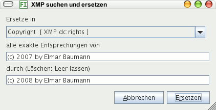

Mit diesem Befehl können Sie in allen ausgewählten Bildern einzelne XMP-Metdaten ersetzen, beispielsweise das falsche Jahr in einem Copyright oder Tippfehler. Es werden nur genaue Entsprechungen ersetzt.

Lassen Sie das Ersetzen-Eingabefeld leer, wird der Begriff aus allen ausgewählten XMP-Filialdateien gelöscht.
Zusätzlich wird die Datenbank mit den neuen Daten aktualisiert.